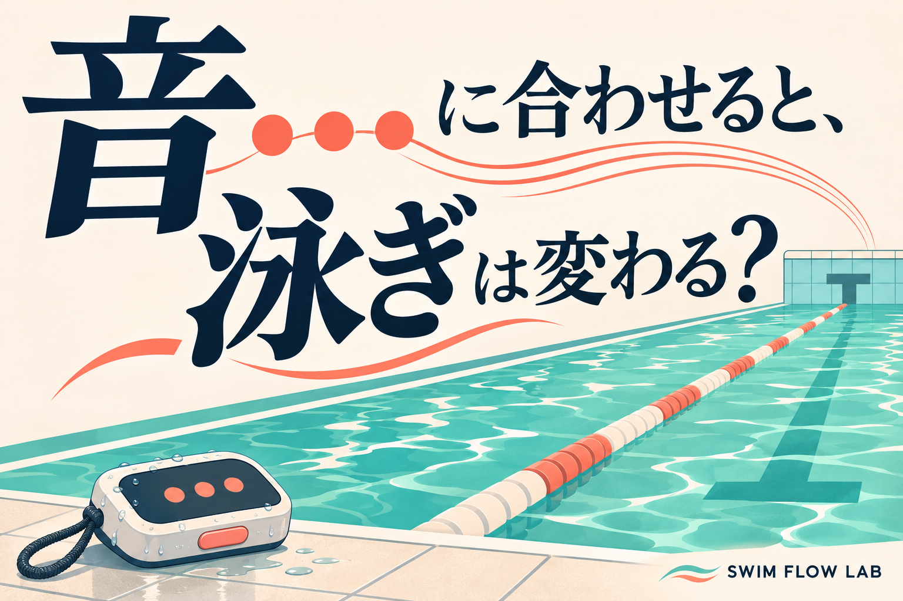

SWIMMING RESEARCH / 23
音に合わせると、泳ぎは変わる？
「ピッ」は何の合図？ 音と泳ぎの研究を読む
2026年11月13日 公開

「同じように泳いだつもりなのに、さっきより急いでいた」。時計を見て、初めて気づくことがあります。泳いでいる間は、自分のリズムをつかむのが意外と難しいものです。
そこで使われるのが、一定の間隔で「ピッ」と鳴る、水泳用のメトロノーム。音楽の練習で拍子を刻む道具の、水の中でも使える仲間です。
ただし、音が鳴れば上手になる、という話ではありません。何を音に合わせるのか。音を外した後にもできるのか。 この二つを分けると、道具の役割が見えてきます。
1｜その「ピッ」は、何の合図？
一緒に歩く人が「いち、に」と言ってくれたら、足を出すタイミングを合わせやすくなります。一方で「次の角までに着こう」という合図なら、一歩ずつの出し方までは決めません。水泳の音にも、これに似た違いがあります。
一つは、手を水に入れる時刻に合わせる使い方です。右の手が入ったらピッ、次に左の手が入ったらピッ。ここでは、手が水に入ることを「入水」と呼び、一音を片方の手の入水一回に対応させています。右手から次の右手までを一回と数える説明もあるため、「一回」の意味を先にそろえることが大切です。
同じ「ピッ」でも、合わせる場所が違う
左、右、左…。手が水に入るタイミングを音とそろえる例。
壁から泳ぎ出し、次の音で向こうの壁へ。途中に何回かくかは、この音だけでは決まらない。
もう一つは、向こうの壁に着く時刻に合わせる使い方。音が次に鳴るまでに、プールの端から端へ泳ぎます。こちらは一かきごとの合図ではありません。途中で何回かくかまで、音が指定しているわけではないのです。
同じ道具でも、聞いている合図の意味が違います。「音を速くすればいい」と設定を変える前に、自分が合わせたいものを言葉にしてみましょう。入水に合わせる研究（Williamsほか、2023）、壁に合わせる研究（Fassoneほか、2025）
2｜壁に着く時刻を、音で確かめる
例えば、25mのプールを片道30秒で泳ぐとしましょう。これは説明用の仮の設定で、あなたへのおすすめタイムではありません。出発から30秒で向こうの壁、60秒で出発した壁に戻る。90秒で向こうの壁、120秒で戻れば100mです。片道を続けて4回、つまり2往復します。
ここで確かめたいのは、速い記録を出せたかよりも、決めた時刻に着けたか。早く着きすぎることも、遅く着くことも、目標からのずれになります。
続けて100m泳ぐ：25mの区間を四つ進む
- 11区間目｜25m地点・30秒
壁に着き、ターンして次の壁へ。ここでは休憩せず泳ぎ続ける。
- 22区間目｜50m地点・60秒
壁に着き、ターンして次の壁へ。ここでは休憩せず泳ぎ続ける。
- 33区間目｜75m地点・90秒
壁に着き、ターンして次の壁へ。ここでは休憩せず泳ぎ続ける。
- 44区間目｜100m地点・120秒
手で最後の壁に触れる。出発から120秒で100m。
丸は壁に着いた時刻。横軸は時間（右ほど後）。ずれの大きさは仮例です。
Fassoneらは、競泳選手24人を二つのグループで調べました。一方は25mごとの壁に触れる瞬間を音に合わせ、もう一方は泳ぎ終わってからコーチに100mのタイムを教わりました。音に合わせた側では、音を外したテストでも目標とのずれが小さくなり、片道ごとにかかる時間もそろいやすくなりました。研究本文
ただし、少人数の競泳選手の研究です。音を使う側の練習は4日、比較側は2日と期間も違います。「誰でも、同じだけ上達する」とは読めません。研究から借りたいのは、速さを追いかけることより、途中の目印を作るという考え方です。
音が鳴った時に壁の手前だったら、目標より到着が遅れています。ただし、どこでずれたのかは、その音だけでは分かりません。前半と後半のどちらだったかを、次にコーチと確かめる問いにできます。音に追いつくために最後だけ慌てるより、区間全体を振り返るほうが、調べたいことがはっきりします。
3｜音がなくなったら、どうなる？
自転車で後ろを支えてもらうと、進めた気がする。でも、支える手が離れた後にも進めるかは、もう一度確かめたい。音を使う練習にも、同じ問いを置けます。
Williamsらは、大学の高い競技水準にある女子選手15人で、入水リズムを扱いました。一部の選手が練習中に音を使い、その後は外して泳ぎます。この条件では、音を使ったグループだけが、使わなかったグループより同じ間隔で手を入れ続けられるようになった、とは確認できませんでした。研究本文
音の前・音を使う間・音を外した後を分ける
- 1まず、音なしで泳ぐ
今の泳ぎを知る。同じ泳法・同じ距離で比べる基準にする。
- 2音があるとき
合図を聞きながら、泳ぎを合わせられたかを見る。
- 3音を外したとき
合図なしでも同じように泳げるか、改めて確かめる。
これは「音は役に立たない」という証明ではありません。短い実験で、対象も経験豊かな選手です。先ほどの壁到着の研究とは、音に合わせる動作も練習期間も違います。二つを単純に勝ち負けのように並べることはできません。
それでも、確かめ方のヒントは共通しています。音がある間に合わせられたことと、音がなくても再現できることを、分けて見る。 その場ではできた、少し休んでもできた、次の日にもできた。この三つは、同じ出来事ではありません。
もちろん、一度ずれただけで「身についていない」と決める必要もありません。疲れや混雑など、その日の条件もメモしておくと、数字だけで自分を評価せずにすみます。
4｜次の練習では、一つだけ聞いてみる
まず選びたいのは、「腕のリズムを確かめたい」のか、「片道の時間をそろえたい」のか。一度に両方を直そうとすると、音に何を合わせているのか分からなくなります。
水泳用の機器を使うなら、施設で使えることを確認し、指導者と無理のない設定を選びます。子どもは一人で試さず、大人が見守る環境で。周囲や指導者の声に注意を向けられないなら、音に合わせることを優先しません。
次の練習は、音の役割を一つだけ決める
- 1何に合わせるか決める
入水なのか、次の壁なのか。指導者と先にそろえる。
- 2普段と比べて試す
同じ距離、同じ泳ぎ方で。無理に速い音へ追いつこうとしない。
- 3感覚を一言、残す
合ったかに加え、呼吸や余裕も見る。次に確かめたいことを一つ決める。
練習のメモは、たくさんの数字で埋めなくても大丈夫です。「何を合わせたか」「音を外したらどうだったか」「息苦しさや慌ただしさはなかったか」。この三つから始められます。音を外した後の記録は、同じ泳法・同じ距離で比べましょう。
機器を持っていなければ、まずコーチと片道のタイムを確かめるところから。これは音を使う練習と同じ効果がある、という意味ではありません。自分が何を知りたいのかを決める、別の入口です。
音は、泳ぎを採点する先生ではない
今回の二つの研究は、音という目印を借り、その後の泳ぎを確かめていました。ただし、壁に着く時刻と手の入水では、確かめていることが違います。
「ピッ」に間に合ったかだけで、自分の泳ぎに丸やばつをつけなくて大丈夫。音は、普段は気づきにくい時間を知らせる目印です。
次にプールへ行ったら、「今日は何をそろえてみよう」と一つ選ぶ。そして、目印がなくてもどうだったかを見てみる。道具に泳ぎを任せるのではなく、自分の泳ぎを知るために道具を借りる。そんな使い方なら、練習の終わりに、タイム以外の発見も持ち帰れそうです。
参考文献と確認範囲
- Fassone M, et al. (2025). Metronome-guided training accelerates the adaptation to an aerobic training pace in swimming. Frontiers in Sports and Active Living, 7:1588758. 全文 — 方法・結果・限界を確認。本文2章の仮の30秒設定はこの研究の数値ではありません。
- Williams RE, et al. (2023). The Influence of Auditory Cueing on Stroke Rate in Elite Swimmers. Journal of Expertise, 6(2), 121–129. 全文PDF — 方法と結果を確認。抄録の要約だけでなく本文の群間比較に基づき記述。
本文の練習メモとたとえは、研究結果を読むための編集部の説明です。実際に子どもの理解を測った教材ではありません。